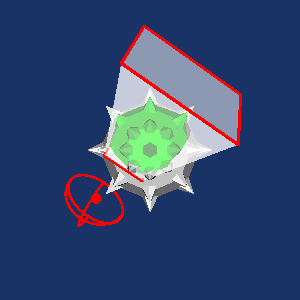
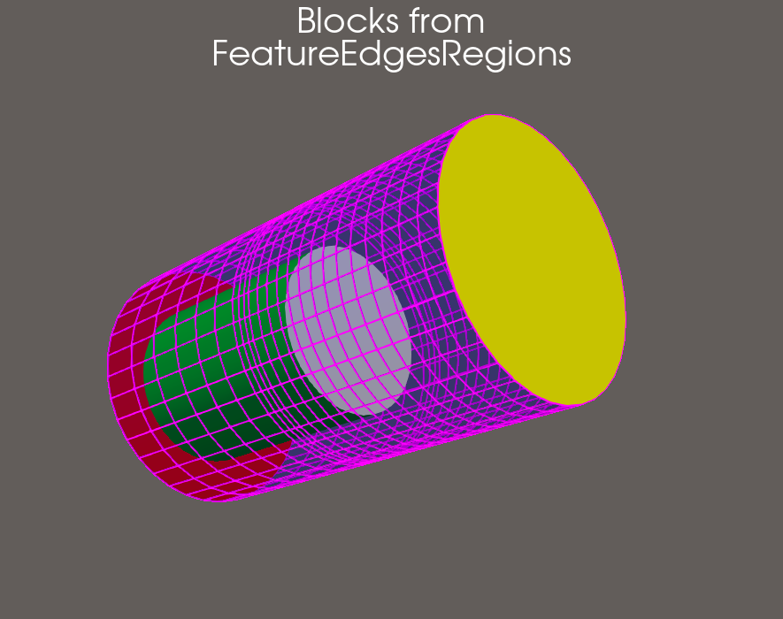
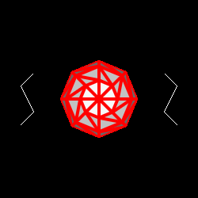
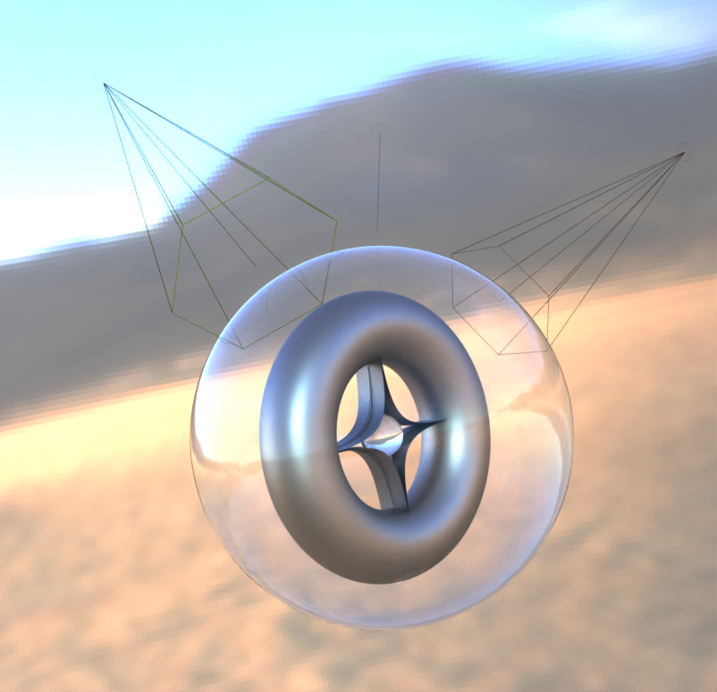
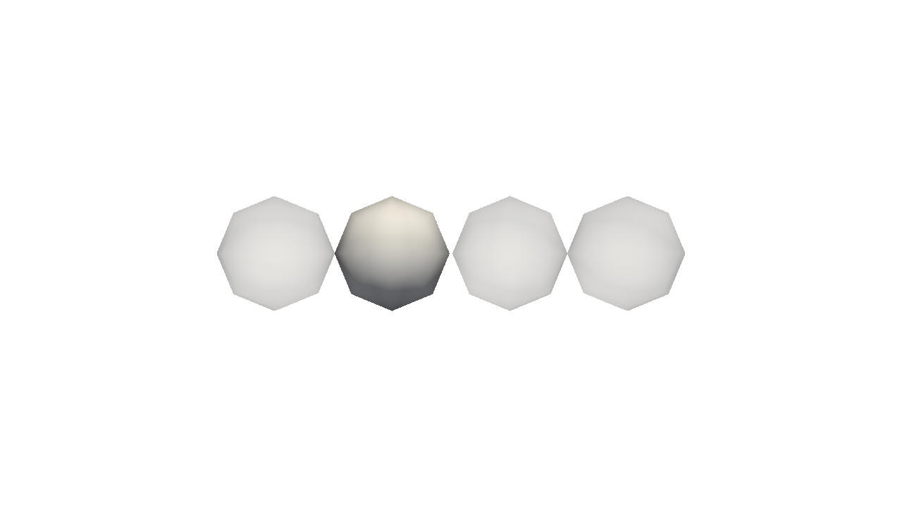
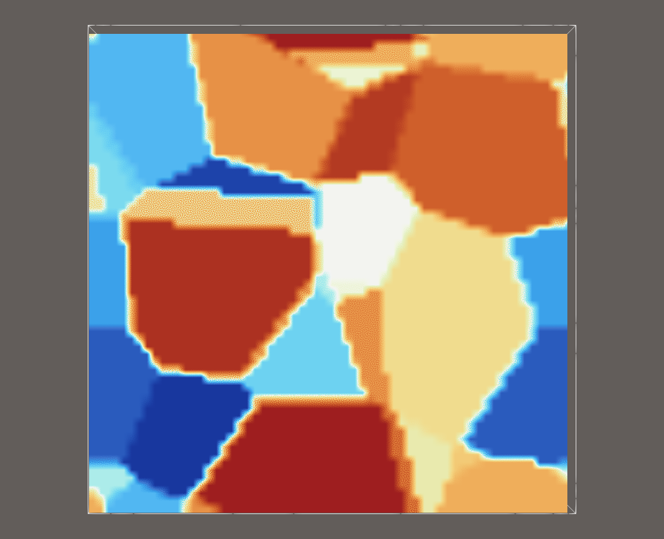
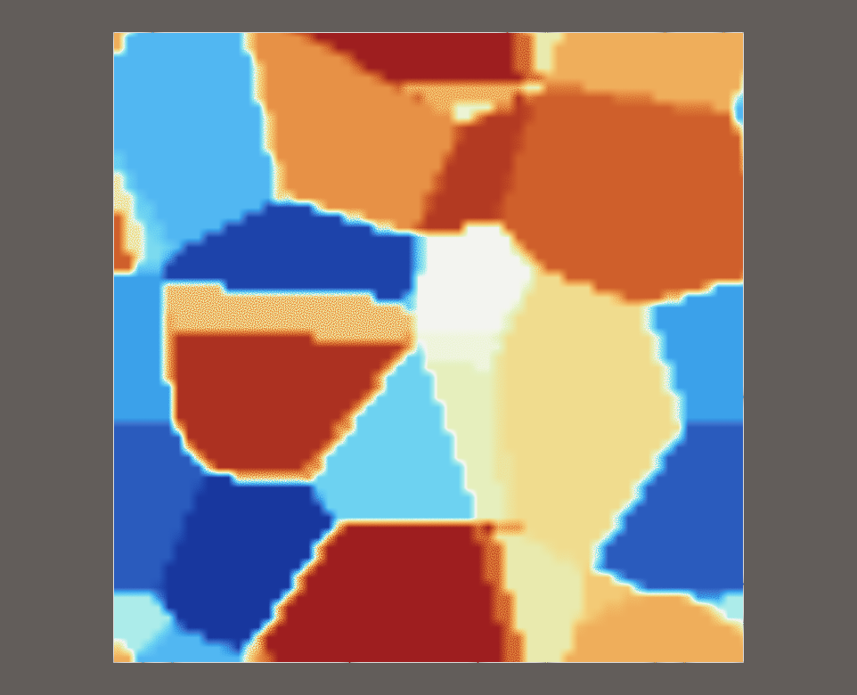

9.5#
Released on 2025-06-20.
VTK 9.5 Release Notes#
Changes made since VTK 9.4.2 include the following.
New Features#
Annotation#
Grid Axes in VTK VTK now has the
vtkGridAxesActor3Dthat is the successor to thevtkCubeAxesActorfor cube axes annotation. This new actor was the default cube axes grid for ParaView and usesvtkAxisActorunderneath the covers for better label placement strategy over its precursor.
DataModel#
Add AxisAligned and Offset options to vtkPlane vtkPlane now has AxisAligned and Offset options.
AxisAligned: if On, locks normal to plane to be aligned with x, y, or z axis.
Offset: the origin is shifted in the direction of the normal by the offset.
Introduce implicit Frustum and widget

The new
vtkFrustumimplicit function represents a frustum resembling a pyramid with a clipped top. You can shape it by using setters for its vertical/horizontal angles and the near plane distance. It supportsvtkImplicitFunction’s transform capabilities. (Author notes)vtkDataSet: Add GetMinSpatialDimension
vtkDataSethas a new methodGetMinSpatialDimensionthat returns the minimum spatial dimension of the dataset.Added new class to manually create a Cocoa NSAutoreleasePool The new class
vtkCocoaAutoreleasePoolallows manually creating and draining a Cocoa autorelease pool. (Author notes)
Filters#
Add AxisAlignedReflectionFilter
The Axis Aligned Reflection filter reflects the input dataset across the specified plane. This filter operates on any type of data set or hyper tree grid and produces a Partitioned DataSet Collection containing partitions of the same type as the input (the reflection and the input if CopyInput is enabled). Data arrays are also reflected (if ReflectAllInputArrays is false, only Vectors, Normals and Tensors will be reflected, otherwise, all 3, 6 and 9-component data arrays are reflected).
Add AxisAlignedTransformFilter
The Axis Aligned Transform Filter performs axis aligned affine transformation on the input (translation, scaling, rotation). The filter operates on any type of vtkDataSet or vtkHyperTreeGrid, and the outputs data type matches the input.
Add FillMaterial option to HTG Geometry filter
vtkHyperTreeGridGeometrynow has aFillMaterialoption. Enabled by default, it produces the same result as before. When disabled, only interface lines are added to the resulting polydata.Add option to add cells to the output of vtkPCANormalEstimation
The vtkPCANormalEstimation support now adding cells to the output
vtkPolyDatato enable the visualization on paraview, the user can set the variable CellGenerationMode to 0: No cells will be added (default option), 1: A single cell encompassing the entirevtkPolyDataand 2: A cell for each point.Add Gaussian integration strategy
The
vtkIntegrateAttributesfilter now accepts different integration strategies. The original way of integration is now called Linear and the Gaussian Integration strategy has been added. The Gaussian Integration handles higher order cells and n-linear degenerate cells like non planar quads or hexahedron with non planar faces. Also, the Gaussian integration is not affected by a different point ordering as long as the constraints specified for each cell are maintained.Add support for oriented images in vtkProbeFilter
vtkProbeFilter has been improved to support oriented images. The implementation now rely on the native support of orientation in the API of vtkImageData.
Add vtkQuadricDecimation::Set/GetMaximumError()
vtkQuadricDecimationnow hasSetMaximumError()andGetMaximumError()methods. This allows stopping decimation when the node error exceeds a specified upper limit.Append filters: Multithread and Improve Performance The
vtkAppendFilterandvtkAppendPolyDatafilters have been re-written and multithreaded, significantly improving their performance.vtkMergeBlocksandvtkAppendDataSets, which use these filters internally, have also been improved.💥Introduce vtkExplodeDataSet filter

vtkExplodeDataSetcreates avtkPartitionedDataSetCollectionfrom any input dataset according to a cell scalar isovalue criteria. Each partition of the output contains cells that share the same value for the given cell array. It replacesvtkSplitByCellScalarFilterand usesvtkPartitionedDataSetCollectionas output. (Author notes)vtkGenerateRegionIds
vtkGenerateRegionIdsis a new polydata filter that adds a CellData array containing a region identifier. A region is defined as a collection of cells sharing at least one point and having normals within a configurableMaxAnglethreshold. The resulting array name isvtkRegionIdsby default. (Author notes)
I/O#
Add AVMESH reader
AVMESH is the unstructured format used in CREATE-AV Kestrel and Helios.
Add external memory support for vtkConduitSource
vtkConduitSourcecan now keep point coordinates, cell connectivity and field values from conduit on an accelerator device such as CUDA or HIP. This is done by testing pointers in conduit to see if they are stored on a device or on the host memory. Note that you must configure and build VTK with VTK-m configured for the appropriate device, otherwise data will be transferred to the host memory.Add vtkFidesWriter for writing out data in ADIOS2 BP format
This adds
vtkFidesWriterwhich uses the Fides library to write data to ADIOS2 BP files. This initial version only provides support for the BP engines (SST support is in progress). When writing the data, Fides will also write the schema as an attribute in the BP file, so the data can be read back in withvtkFidesReader.Add zone section selection to FLUENT Reader You can now select zone sections to load when reading a FLUENT file, and the output multiblock will only contain these zones. A
CacheDataoption is available to balance I/O performance and memory usage. Due to interdependencies, some unselected zones might still be read. (Author notes)CGNSReader: Load surface elements stored as Element_t entries The CGNS reader has a new option
LoadSurfacePatchthat allows to read 2D elements that are notBC_tnodes (handled by theLoadBndPatchoption) but ratherElement_tnodes. This allows reading boundary elements regardless of assigned boundary conditions.GLTF document loader selectively toggle model data The
vtkGLTFDocumentLoadercan now selectively enable/disable loading of animation keyframes (SetLoadAnimation), model images (SetLoadImages), and inverse bind matrices for model Skin (SetLoadSkinMatrix). All are true by default. (Author notes)Import GLTF scenes from in-memory streams
The
vtkGLTFImporternow accepts a resource stream to load the scene from.netcdf: Enable CDF5 format VTK’s internal netcdf now enables the CDF5 format.
OpenFOAM reader: allow
_0files The OpenFOAM file reader in VTK now provides an option to load file names which ends with_0. This was previously disabled as OpenFOAM restart files often use this naming schema, but it prevented loading actual result files with the same pattern. (Author notes)Support reading XGC files in Fides format Recent changes to Fides allow loading XGC files without specifying paths to all of the input files. The VTK Fides reader is updated to support reading these files.
Support unsigned integers in netCDF files NetCDF readers like
vtkNetCDFCFReadernow support unsigned integer data types, loading these variables into the correct VTK array type.vtkConduitSource: Add state/metadata/vtk_fields node
A new Conduit tree node,
state/metadata/vtk_fields, has been introduced to store VTK-interpretable field metadata, includingattribute_typeand data cleaning parameters, thereby deprecatingascent_ghosts. (Author notes)vtkDelimitedTextReader improvements: Preview, SkippedRecords, Comments
vtkDelimitedTextReadernow offers aGetPreview()method to inspect the initial lines of a file for configuration. A newSkippedRecordsoption allows skipping initial N records. Support forCommentCharactershas been added to ignore parts of records. (Author notes)vtkLANLX3DReader: Import from ParaView
vtkLANLX3DReaderis a reader for LANL X3D files. This reader used to be available in ParaView, but it has been moved to VTK now.vtkOpenFOAMReader: Multithreaded Reading of case files
vtkOpenFOAMReadernow supports multithreaded reading of case files (on by default, disable withSetSequentialProcessing(true)). Useful for large cases on network drives. An optionReadAllFilesToDetermineStructure(off by default) allows reading only proc 0 directory to determine case structure. Several performance improvements were also made. (Author notes)VTK Conduit now supports pyramids and wedges VTK_PYRAMID and VTK_WEDGE cell types are now supported by
vtkDataObjectToConduit. These cell types are serialized to Conduit nodes with “shape” set to “pyramid” or “wedge” respectively.VTK Conduit now supports Blueprint implicit topology using point set
Catalyst Conduit now supports Blueprint’s implicit topology using point sets, enabling meshes defined by points without cells. This is achieved by specifying a points topology type linked to an explicit coordset. (Author notes
VTKHDF: Add support for HyperTreeGrid
HyperTreeGrid support has been added to the VTKHDF specification and reader. It supports temporal & multi-piece reading.
VTKHDF Specification is now version 2.4.
VTKHDF: Support reading and writing composite distributed temporal datasets
The vtkHDFWriter support now extends to composite temporal datasets (multiblock and partitioned dataset collection), all written in a same file. Composite temporal datasets can also be written and read efficiently in parallel using MPI, and support static meshes.
Support for reading composite structures containing ImageData has been fixed.
vtkHDFReaderprotected membersWholeExtent,OriginandSpacinghave been deleted.
Module System#
vtk_module_wrap_python
Added argument
vtk_module_wrap_python(WRAP_TARGET). This argument names a target to be created that depends upon all wrapping work done in the call.
Interaction#
Add getter and setter functions for the text on the buttons of vtkCameraOrientationRepresentation
You can now customize the text displayed on top of the buttons of a
vtkCameraOrientationRepresentationusing functions likevtkCameraOrientationRepresentation::SetXPlusLabelText(const std::string& label). These methods follow similar naming convention to the existing getter methods for thevtkTextPropertycorresponding to the button labels. (Author notes)Add function Stop Select to vtkInteractorStyleRubberBandPick
As the already existing “StartSelect()” function allows user to start picking, the new function “StopSelect()” allows to interrupt picking.
Add option to independently set the thickness of reslice cursor widget axes
You can now set the thickness of reslice cursor axes independently by turning on the vtkResliceCursorRepresentation::IndependentThickness flag.
Python#
Wheels for linux aarch64 available on PyPi
VTK now provides wheels for Linux aarch64. See https://pypi.org/project/vtk/9.5.0/
Add
vtkBitArraysupport tonumpy_supportArray conversion between vtk and numpy (usingvtk_to_numpy) now supportsvtkBitArray. Converting avtkBitArrayto numpy results in an array of uint8.Add deprecated decorator to Python
VTK now provides a
@deprecateddecorator that emits aDeprecationWarningwhen a decorated function is called. You can edit the message shown to the user.To mark a function as deprecated, use:
@deprecated(version=1.2, message="Use 'new_function' instead.") def old_function(): pass
Add to the NetCDFCFReader the ability to use data from an XArray An XArray can create a vtkNetCDFCFReader that uses its data, using zero copy when possible to create a VTK dataset using
reader = xarray_data.vtk.reader(). AnyvtkNetCDFCFReaderoptions can be set (FileNameis ignored), and the reader can be used as usual in a VTK pipeline.OpenXR and OpenXRRemoting modules are now wrapped in Python and shipped in Windows VTK wheels! OpenXR loader is shipped with the wheel, but OpenXR runtimes have to be installed by the end user for their specific devices.
Qt#
Generate ConfigureEvent for Qt QResizeEvent
The
QVTKInteractorAdapternow translates QResizeEvent into a VTK ConfigureEvent. This brings its behavior in line with the native X11/Windows/macOS event handling, which generate ConfigureEvent in response to the native UI resize events.Add EnableTouchEventProcessing flag to QVTKOpenGL*Widgets & QVTKOpenGLWindow
As Qt touch event will automatically be translated to mouse event, so the mouse event will be processed twice for one touch in VTK interactor. With this new flag for
QVTKOpenGL*Widget/QVTKOpenGLWindow, you can switch on/off the Qt touch event processing by purpose.Multi-touch gestures in QtQuick/QML Added support for multi-touch interaction to
QQuickVTKItemusing thePinchHandlerQML component. Connect new slots inQQuickVTKItemto the handler’s signals for translation, rotation, and scale changes. (Author notes)
Rendering#
Add new setting to specify 2D point shape in vtkProperty
You can now draw round points by calling
vtkProperty::SetPoint2DShape(vtkProperty::Point2DShapeType::Round). The default is square. This feature is currently implemented in the WebGPU rendering module. (Author notes)Add option to independently set thickness of cell edges and lines
You can now set the thickness of cell edges independently without altering the thickness of lines. This feature is useful to emphasize either edges or lines in a scene with different widths.

Add Prolab Transfer function interpolation support
The
vtkColorTransferFunctionnow supports Prolab color space for interpolation viavtkColorTransferFunction::SetColorSpaceToProlab(). (Author notes)Add SurfaceProbeVolumeMapper
vtkOpenGLSurfaceProbeVolumeMapperis a PolyDataMapper colored with probed volume data. It accepts Input (rendered surface), Source (vtkImageData for scalar interpolation), and optional ProbeInput (geometry for interpolation). Scalar values are projected using texture coordinates. (Author notes)Add vtkFastLabeledDataMapper
The new
vtkFastLabeledDataMapperuses GPU texture acceleration to draw labels at much higher frame rates, designed to render thousands of labels at over 60 fps.Add vtkLightWidget to path-traced environments
The
vtkRenderingRayTracingmodule now supports rendering and interaction with thevtkLightWidgetfor interactive light placement and modification.
Add webgpu implementation for vtkGlyph3DMapper
The VTK::RenderingWebGPU module now provides an implementation for the abstract
vtkGlyph3DMapperclass.Add webgpu implementation for vtkPolyDataMapper2D
The VTK::RenderingWebGPU module now provides an implementation for the abstract
vtkPolyDataMapper2Dclass. This allows rendering geometry in the 2D viewport plane using webgpu.Improved OpenGL Debug Logging
You can now see detailed debug messages from OpenGL when VTK is built with
VTK_REPORT_OPENGL_ERRORS=ON. ThevtkOpenGLRenderWindowutilizes theGL_ARB_debug_outputextension for more clarity. TheQVTKRenderWindowAdapternow creates a debug OpenGL context when this option is enabled.Memory Statistics For WebGPU Rendering Backend
You can now view detailed information about the GPU memory usage of individual textures and buffers by setting the
VTK_WEBGPU_MEMORY_LOG_VERBOSITYenvironment variable or specifying avtkLogger::Verbosityvalue tovtkWebGPUConfiguration::SetGPUMemoryLogVerbosity.Order Indepedent Translucency with MSAA
The new
vtkRenderer::UseOITflag helps resolve conflicts between OIT and MSAA. (Author notes)
ThirdParty#
Add scnlib third-party library
The
scnlibthird-party library (v4.0.1) has been added to VTK for fast and efficient parsing of numbers from strings.
WebAssembly#
Allow binding a WASM scene manager render window to a HTML canvas
You can now call
sceneManager.bindRenderWindow(vtkTypeUInt32 id, const char* canvasSelector)method from JavaScript in order to bind a render window to a HTML canvas element.Add exception support for WebAssembly builds
You can now enable exceptions in VTK wasm build with the
VTK_WEBASSEMBLY_EXCEPTIONSoption. Default value isOFF.
Wrapping#
Add function call feature in vtkObjectManager
You can now invoke methods on a registered object using the new
nlohmann::json vtkObjectManager::Invoke(vtkTypeUInt32 identifier, const std::string& methodName, const nlohmann::json& args)function.Add method that allows updating states of specific objects.
You can now call the
void UpdateStatesFromObjects(const std::vector<vtkTypeUInt32>& identifiers)method on thevtkObjectManagerto only update states of objects corresponding to the vector of identifiers. This method allows you to efficiently update a specific object and it’s dependencies without touching other unrelated objects.Add new verbosity setting for log messages related to marshalling
You can now configure the verbosity level for log messages in the core marshalling classes
vtkDeserializer,vtkSerializerandvtkObjectManager. This facilitates debugging (de)serialization errors in release builds on the desktop and even in wasm.
Changes#
API#
Remove usage of the nlohmannjson library from public facing API :warning: BREAKING_CHANGES
The
nlohmann::json vtkAbstractArray::SerializeValues()method is removed due to conflicts with downstream projects using different nlohmannjson versions. This method, added in 9.4, has been reverted. (Author notes)
Annotation#
vtkAxisActor and vtkPolarAxesActor breaking changes :warning: BREAKING_CHANGES
Protected members of
vtkAxisActorandvtkPolarAxesActorclasses were moved to private. Please use appropriate Getter/Setter to use them instead. Also some API were ported fromconst char*tostd::string, breaking getters likevtkAxisActor::GetTitle()andvtkPolarAxesActor::GetPolarAxisTitle(). (Author notes)
Build#
C++17 is now required for VTK :warning: BREAKING_CHANGES
VTK now requires C++17 compiler support. Minimum required compiler versions have been updated (e.g., GCC 8.0, Clang 5.0, MSVC 2017, Apple Clang 10.0, Intel ICC 19.0).
Simplify the customization for Kokkos backend
When using Kokkos, setting up compilers for devices/backends requiring specific languages (like CUDA or HIP) is simplified. VTK now gets Kokkos backends directly from Kokkos configuration, automating compiler setup, removing the need to set
VTK_KOKKOS_BACKEND.
Filters#
Rename HTG filter VisibleLeavesSize to GenerateFields
vtkHyperTreeGridVisibleLeavesSizeis renamed tovtkHyperTreeGridGenerateFields. The new class is more generic, allowing easier addition of new fields by inheritingvtkHyperTreeGridGenerateField.HTG Surface Representation improvements :warning: BREAKING_CHANGES
Cells outside the camera frustum are now decimated in 3D/2D/1D in HTG Surface Representation, working in all cases including non-parallel projection and masks. Several public members of
vtkAdaptiveDataSetSurfaceFilterare deprecated or moved to private. (Author notes)vtkParticleTracer::CachedData private
Previously protected member
vtkParticleTracer::CachedDatais now a private member. It is not intended to be used by classes inheritingvtkParticleTracer.vtkQuadricDecimation now handles id attributes
The quadric decimation filter has been updated for
vtkIdTypeArraypoint attributes. These are no longer interpolated during edge collapse; instead, one ID is kept, and the other is discarded.
I/O#
JSONSceneExporter: Support exporting a list of named actors and arrays selections
vtkJSONSceneExportercan now export a list of named actors and select which arrays are exported per actor.vtkJSONDataSetWriteralso supports point/cell array selection. Some protected methods invtkJSONSceneExporterare now private.
Interaction#
High precision timers for Windows interactor
The Windows interactor was creating timers using the native Win32 API
SetTimer. However, this timer isn’t precise and the duration wasn’t respected for short duration. It now usesCreateTimerQueueTimerAPI which is much more precise.
Thirdparty#
Transition from VTKm to Viskores
VTK has transitioned its dependency from VTKm to Viskores. VTK Accelerator VTKm API remains fully compatible for downstream users. No code changes should be required for applications using the VTK Accelerator API. (Author notes)
cli11
Updated to be based on v2.5.0 for security updates and bug fixes.
diy
Updated to use the internal
fmtlibrary. This change is necessary to avoid conflicts with diy’sfmt.expat
Updated to be based on 2.7.0. Using expat older than 2.6.3 now causes a warning.
exprtk
Update to be based on 0.0.3-cmake.
fast_float
Updated to be based on v8.0.2. The minimum version has been upgraded to 7.0.0 to support int parsing and have C++17 compliant results.
fmt
Updated to be based on 11.1.4. The minimal external fmt version is now 11.0.0.
libharu
Updated to be based on v2.4.5 to obtain the latest security and bug fix patches.
lz4
Updated to be based on v1.10.0 for security updates and bug fixes.
lzma
Updated to be based on v2.6.4 to obtain the latest security and bug fix patches.
exodusII and Ioss
Updated
exodusIIandIossto be based on SEACAS 2025-02-27.
VR#
vtkOpenXRManager::InitializeandvtkOpenXRManager::Finalizemarked as internal APIsThese functions are now treated as internal to
vtkOpenXRRenderWindow. The signature ofvtkOpenXRManager::Initializehas changed.vtkOpenXRManager::(Set|Get)UseDepthExtensionmoved tovtkOpenXRRenderWindowThese methods have been moved to
vtkOpenXRRenderWindow. ThevtkOpenXRManagerversions are now no-op and deprecated.
Wrapping#
Change Java build flags
VTK_JAVA_SOURCE_VERSIONandVTK_JAVA_TARGET_VERSIONCMake flags are superseded byVTK_JAVA_RELEASE_VERSION. This aligns with newer JDKjavacversions that provide the-releaseflag, simplifying build configuration.
Fixes/improvements#
Charts#
Fix vtkPlotBar::GetBounds logic when log scale is enabled
The
vtkPlotBar::GetBounds(double*, bool unscaled)now correctly returns unscaled bounds whenunscaledis true and scaled bounds whenunscaledis false.
DataModel#
Fix CellTreeLocator for 2D grids
A
std::vectorout of bounds access has been fixed when building the locator for meshes whose x, y or z extent is zero.Polygon centroid computation fixed
An issue with
vtkPolygon::ComputeCentroid()has been fixed. It now uses a composite weighted-area triangulation for robustness with non-planar polygons and includes a planarity tolerance. (Author notes)vtkPolyhedron: Implement GetCentroid and use it in GetParametricCenter
In VTK 9.5.1, the
vtkPolyhedronclass introduces theGetCentroidfunction, which computes the signed-volume weighted centroid of a polyhedron using its pyramid decomposition. TheGetParametricCentermethod has been updated to return the parametric location of the centroid returned fromvtkPolyhedron’sGetCentroidfunction. (Author notes)Implicit Widget Representations Improvements
Improved interaction and intuitiveness in VTK’s implicit widget representations, including enhanced picking and mouse-based control for shape sizing. A new
vtkBoundedWidgetRepresentationbase class introduces cropping to outline bounds, with API changes affecting several subclasses. (Author notes)
Filters#
Fix vtkBandedPolyDataContourFilter scalars
You can now select scalars used by
vtkBandedPolyDataContourFilterusing theSetInputArrayToProcessmethod instead of changing the scalars on the input data.Fix vtkParticleTracer with unstructured data
Fixed an issue leading to a crash in
vtkParticleTracerwhere locators for unstructured data would not have been created.Fix UMR in vtkDataSetTriangleFilter
For a
vtkUnstructuredGridinput consisting of only tetrahedrons,vtkDataSetTriangleFiltercould give non-deterministic results due to an uninitialized memory read (UMR).Support Partitioned Input in HyperTreeGridGhostCellsGenerator
The HTG GhostCellsGenerator now natively supports Partitioned inputs, using the first non-null partition found as the HTG to process, fixing issues with multi-partition data.
vtkGeometryFilter: Improve performance for polyhedron
vtkGeometryFilternow efficiently extracts polyhedron faces usingGetPolyhedronFacesandGetPolyhedronFaceLocationsmethods, improving performance.vtkRandomAttributesFilter: Prevent deletion of actives attributes
When using
vtkRandomAttributesGenerator, the filter no longer replaces active attributes; it now appends the new random array and flags it as active. Random normals and tcoords are now correctly named.Relative Mode for vtkTemporalArrayOperatorFilter :warning: BREAKING_CHANGES
vtkTemporalArrayOperatorFilternow supports aRelativeModethat uses the currentUPDATE_TIME_STEPand a shifted time step for temporal operations. This introduces consistent output behavior across data types and enforces encapsulation via getter/setter access to formerly protected members. (Author notes)
I/O#
EnsightCombinedReader: Performance improvements pass
Performance of
vtkEnSightGoldCombinedReaderimproved, especially for large binary files with nfaced/tetrahedron cells. Fixes include tetrahedron-specific cell building, block reading of connectivity data, faster parsing during RequestInfo, and an int overflow fix. (Author notes)Fix AMReX particle reader for files without top-level header
The
vtkAMReXParticlesReadernow continues to read particles if a top-level header is missing, initializing the time step to 0 in such cases.Fix ordering of DICOM pixel spacing
The
vtkDICOMImageReaderused to provide the vertical and horizontal pixel spacing in the wrong order. This issue was only discovered recently because DICOM pixels are nearly always square.Fix issue with Fides not initializing HIP before using it
Addressed a crash in Fides caused by attempting HIP memory allocation before HIP initialization. This was fixed by updating VTK-m. (Author notes)
Fix vtkAMReXGridReader when reading larger than 2GB files in Windows
You can now open grid files larger than 2GB on Windows using the
vtkAMReXGridReader. Previously, a bug prevented loading arrays stored beyond the 2GB offset.Fix vtkAMReXParticlesReader when using MPI
The
vtkAMReXParticlesReadernow functions correctly in parallel MPI mode, fixing a bug that caused incorrect output when the number of grids was not evenly divisible by the number of MPI processes.GLTF document loader default scene
The
vtkGLTFDocumentLoaderensures that the internal cache of scenes is non-empty for consumer code that relies on checking the validity of the default scene.Remove error for missing Fides timestep
The Fides reader no longer errors if a requested timestep is not found, especially when the Fides file has no specified timesteps. It now sets an appropriate time index (0) in such cases, improving compatibility with tools like ParaView. (Author notes)
vtkDIYGhostUtilities: Ensure arrays are enqueued and dequeued properly
Improvements to
vtkDIYUtilitiesandvtkDIYGhostUtilitiesfor stricter loading, correct saving of array types, ensuring dequeued arrays are valid, and fixing polyhedral meshes invtkConduitToDataObject. (Author notes)vtkAlembicExporter: Fixed export of textures
Previously, textures were unintentionally being saved to the current working directory of the executable. Now, they are saved alongside the exported Alembic file.
VRML export of cell data colors
Colors of polydata colored by cell data arrays are now designated as such in the exported VRML file.
MPI#
Fix: MPI Gather function hanging when data size was invalid
vtkMPICommunicator::GatherVVoidArraycould hang due to a size check causing an early return for only the failing process. Now,recvLengthsandoffsetsmust be specified for all processes when callingvtkCommunicator::GatherVto prevent this.
Python#
Python VTK data model improvements
Further cleaned up field array handling in Python for homogeneous behavior between
vtkDataSetand composite datasets. This includes better support for dictionary-like access topoint_dataandcell_data. (Author notes)
Rendering#
ANARI renderer warnings
The ANARI scenegraph implementation has been fixed so that missing backend feature warnings are only issued once per renderer per device, reducing output buffer spam. Various compiler warnings in ANARI integration classes have also been fixed.
Fix actor lighting flag for WASM and cell grid rendering
Fixed a bug that caused an actor to disappear when lighting was disabled on an actor in WASM with the WebGL2 backend.
Fix wide line rendering in GLES default polydata mapper
The
vtkOpenGLLowMemoryPolyDataMapperrendered thick lines incorrectly. It appeared as an extruded cross. This issue is now fixed in the mapper.Fix lighting calculations for PBR interpolation
When both directional and positional lights were intermixed, the polydata mapper treated directional lights as positional, generating incorrect renderings. This is now fixed. (Author notes)
Fix low memory polydata mapper when an actor is added after another is removed from a renderer
Fixed a bug in
vtkOpenGLLowMemoryPolyDataMapperwhere an actor, if added, removed, and then re-added, would not become visible the second time.Fix OpenGL error in OSMesa backend
Fixed a
GL_INVALID_ENUMerror invtkOSOpenGLRenderWindow::ReportCapabilitiescaused by using an unsupported method for queryingGL_EXTENSIONS.Fix vtkCompositePolyDataMapper opacity override

You can now render opaque blocks in a composite dataset even when the actor has an
opacity < 1.0by setting the opacity of the block to 1.0. (Author notes)Fix vertex visibility in OpenGL mappers
Vertices of a mesh are now correctly displayed when
actor->SetVertexVisibility(true)is called, fixing a bug where they only showed if edge visibility was also on.Fix wide lines with cell colors for Apple silicon
Thick lines with cell scalar colors now render correctly on Apple silicon. VTK patches the shader code at runtime for the Apple OpenGL over Metal driver to handle an upstream bug. Use
vtkOpenGLRenderWindow::IsPrimIDBugPresent()to check for this driver bug.Improve IBO construction performances in vtkOpenGLIndexBufferObject
For common cases of triangles-only polydata, IBO construction time has been reduced by about 25%. Performance is further improved if polydata cell arrays use 32-bit connectivity IDs. (Author notes)
Rectilinear Grid Volume Rendering with Cell Data
Fixed an issue in the volume mapper for rectilinear grids with cell scalars where the bounds of the dataset were incorrectly mapped to the texture space.
Before
After


Fix X error about maximum clients reached
Fixes a bug in
vtkXOpenGLRenderWindowthat prevented users from instantiating more than about 300 render windows on Linux with X11.
Fix light transforms when computing shadow maps
The
vtkShadowMapBakerPasscomputes shadow maps for each light by simulating avtkCamerafor each light and compositing the rendered images. However, an unintentional side-effect of this was that the original light’s transforms were being affected by this. In other words, the lights would be corrupt after the shadow map computation. To circumvent this, we cache the light transforms prior to the shadow map computation and then reset them after.
WebAssembly#
Patch state that refers to OSMesa OpenGL window into a WASM OpenGL window class.
The
vtkWasmSceneManagernow automatically patches the state provided toRegisterStateandUpdateObjectFromStatemethods to replace ‘ClassName’ entry ofvtkOSOpenGLRenderWindowwithvtkWebAssemblyOpenGLRenderWindow.
Deprecations/Removals#
All APIs that were deprecated in 9.3 are now removed.
vtkExtentSplitter::Minand::Maxhave been deprecated in favor ofstd::minandstd::max.vtkXMLReader::Minand::Maxhave been deprecated in favor ofstd::minandstd::max.Classes like
vtkHierarchicalBoxDataSet,vtkHierarchicalBoxDataSetAlgorithm, related geometry filters, and XML readers/writers are deprecated. UsevtkOverlappingAMRversions instead.vtkTypedDataArray,vtkTypedDataArrayIterator,vtkMappedDataArray,vtkCPExodusIINodalCoordinatesTemplate, andvtkCPExodusIIResultsArrayTemplateare deprecated. UsevtkGenericDataArrayorvtkAOSDataArrayTemplate/vtkSOADataArrayTemplatealternatives.vtkHyperTreeGridVisibleLeavesSizeis deprecated in favor ofvtkHyperTreeGridGenerateFields.Several public members related to selection and decimation level in
vtkAdaptiveDataSetSurfaceFilter(used by HTG Surface Representation) are now deprecated and have no effect (e.g.,Set/GetCircleSelection,Set/GetDynamicDecimateLevelMax). (Author notes)vtkOpenXRManager::(Set|Get)UseDepthExtensionare deprecated and now no-op. Use the versions invtkOpenXRRenderWindowinstead.VTKHDF Reader: Remove the MergeParts option
The
MergePartsoption of the vtkHDFReader allowed getting a unique Unstructured Grid or PolyData dataset after reading multiple parts. This option has been deprecated and has no effect anymore. Now, multi-piece datasets properly output a vtkPartitionedDataset containing non merged parts. Single-piece datasets still output simple vtkUnstructuredGrid or vtkPolyData. This changes the default behavior of the reader: Unstructured Grid and PolyData multi-piece datasets that used to be read withMergeParts(default) as a single piece are now read as a partitioned dataset. IfMergePartswas disabled manually, only the single-piece case will be read differently: instead of forcing the output to be a partitioned dataset with a single piece, the output is now directly the non composite type, Unstructured Grid or PolyData.Users should replace the use of
MergePartsby manually merging parts using thevtkMergeBlocksorvtkAppendDatasetsmanually instead.
Updates#
The following changes have been made since v9.5.1
9.5.2#
Fix HyperTree initialization routine
vtkHyperTree::Initializeused to incorrectly set up a internal data structure, causing incorrect iterations indices forvtkHyperTreeGridNonOrientedUnlimitedSuperCursor::ToChild. This fixes the Gradient filter results using “Unlimited” mode for HTG, which now gives correct values.Fix serialization for vtkPlane
Resolved an issue with
vtkPlaneserialization where plane parameters were not correctly saved and restored. This ensures consistent behavior when serializing and deserializingvtkPlaneobjects.Fix MouseWheel events in WASM for multi-viewport setups
Fixed an issue where mouse wheel event coordinates were incorrectly scaled in
vtkWebAssemblyRenderWindowInteractor. When thewindow.devicePixelRatiovalue was not equal to 1 in multi-viewport setups, it caused a different renderer to zoom its contents instead of the renderer which was under the mouse cursor. TheProcessEventmethod now properly handles coordinate scaling for MouseWheel events, ensuring consistent zoom behavior across all viewports.